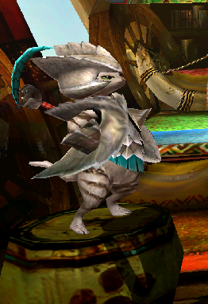
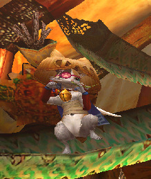
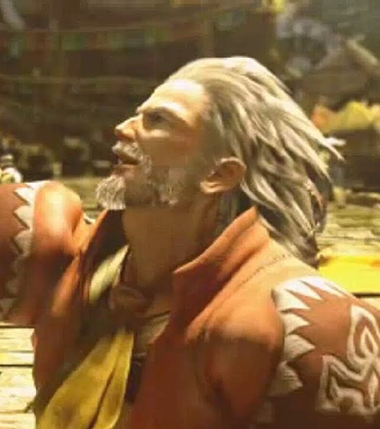
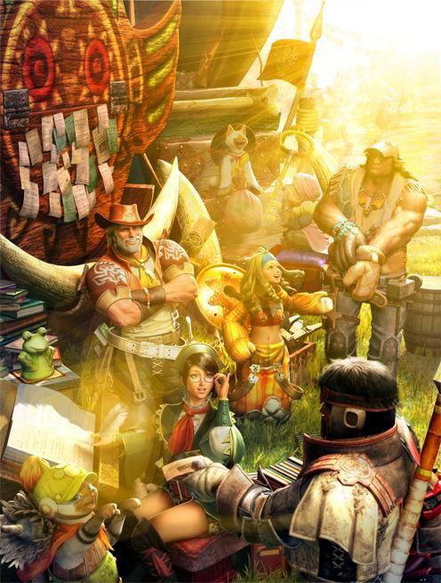
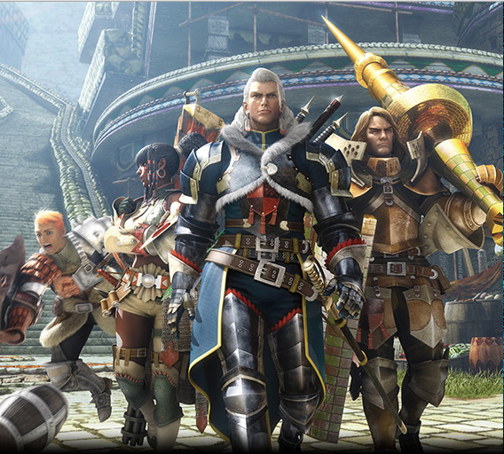

NEFERTI
Protectrice Attitrée de la Caravane (avec un C majuscule)
|
|
|
|
|
|
|
|
|
|
|
|
|
|
|
|

Qu'est ce qu'un Dieu peut-il offrir aux murmures de la nuit ?
❖ ----- Armure Principale ----- ❖
|
|
Heaume Jaggi |
|---|---|
|
|
Tunique Gore X à cape |
|
|
Gardes Gore X |
|
|
Ceinture en Cuir de chasseur |
|
|
Cuissard Gore X |
❖ ----- Apparence physique et personnalité ----- ❖
Muette, Neferti est une personne intimidante dont la seule présence rend nerveux même les guerriers les plus endurcis. Elle est stoïque et possède un visage de marbre qui ne trahit aucune émotion, deux yeux rouges perçants toisant le monde du regard sous l'ombre d'une vieille casquette Grand Jaggi usée. Elle a la peau mate et de longs cheveux noirs attachés en queue de cheval. Neferti ne s'exprime qu'au strict minimum, communiquant par des gestes subtiles quand la situation le demande.
Sa réputation la précède et, combinée à son armure sombre et son aura intimidante, en fait quelqu'un en marge de la société. Ca ne lui pose pas vraiment de problème, Neferti étant en réalité très introvertie et socialement inapte. Elle ne "comprend" pas vraiment les gens, mais protège farouchement ses proches. C'est une chasseuse compétente et professionnelle, bien que solitaire dans le monde communautaire de la chasse.
❖ ----- Biographie ----- ❖
Neferti a grandi à Dundorma, capitale historique de la Guilde des Chasseurs, au sein d’une famille nombreuse. Née muette et émotionnellement distante, elle rêvait de partir, d’être libre, de voir le monde. Un vieux Wyvérien connu sous le nom de "l’Ancien" lui enseigna les bases de la chasse alors qu'elle était encore jeune. Sous sa direction exigeante mais juste, elle rencontra Grauph l’Op, un héros Felyne resté à ses côtés depuis ce jour.
Peu après avoir perdu son mentor de vieillesse, Neferti fut recrutée par un mystérieux Caravanier pour escorter sa caravane jusqu’à Val Habar, une chance inattendue de commencer une nouvelle vie. Neferti se distingua en chemin en défendant le groupe contre un Dah’ren Mohran, ce qui lui valut un poste permanent de gardienne désignée de la caravane. L’équipage était étrange, mais gentil et attachant.
Les années suivantes se passèrent sur les routes, à accepter des chasses pour chaque ville et chaque village croisés. À chaque mission, à chaque Monstre abattu, elle abandonna un peu plus ses racines de débutante pour endosser pleinement son rôle de protectrice sous le regard de sa nouvelle famille. Ensemble, ils atteignirent les sables animés de Val Habar, les forges volcaniques de Harth, le refuge felyne tropical des Sables de Cheeko, et même Cathar, le village reclus perché sur les plus hauts sommets du continent.
Une nuit, le Caravanier la prit à part et lui révéla son véritable objectif : une unique écaille dorée, brillante comme une étoile sous la pâle lumière de la lune. Il l’avait trouvée par hasard et avait juré de découvrir son origine. Neferti lui promit silencieusement de l’aider.
Dans les archives privées de la Guilde, Neferti est reconnue pour son rôle crucial dans la découverte initiale du Gore Magala. Elle affronta et repoussa encore et encore le premier spécimen connu alors qu’il harcelait la caravane. La bête est tristement célèbre pour un virus sinistre qui plonge les Monstres dans une frénésie mortelle, semant le chaos dans les écosystèmes partout où elle vole. Neferti manqua d’y laisser la vie, mais elle le vainquit et sauva de nombreuses autres personnes.
Remerciée en secret par la Guilde, elle reçut l’ordre de garder cette rencontre sous silence pendant que les recherches se poursuivaient, afin d’éviter la panique. Alors qu’elle se reposait avec la caravane, Neferti sentit l’attitude des autres changer. La Guilde la remercia publiquement sans en expliquer la raison, laissant les rumeurs combler les vides. Mal à l’aise et se sentant exposée, elle garda sa casquette de Grand Jaggi vissée sur la tête, se cachant sous sa visière pour éviter les regards. Ce geste, combiné à sa réputation et à son silence, ne fit qu’épaissir le mystère autour d’elle. Une semaine plus tard, alors qu’elle se préparait à repartir, le Caravanier usa de ses relations pour obtenir des matériaux issus du monstre terrassé. Toute la caravane collabora pour lui forger une nouvelle armure qu'elle porte encore aujourd’hui.
La caravane reprit sa route, et le récit de ses exploits se répandit. Sa nouvelle armure ne fit rien pour calmer les ragots. Sa réputation oscilla entre "dangereux mystère" et "monstre dans des vêtements humains", et plus d’un chasseur paniqua en apercevant des yeux rouges luire sous l’ombre de sa casquette. Cette intimidation poussa Neferti vers des chasses solitaires, peu osant approcher la Gardienne de la Caravane. Les tavernes se taisaient à son arrivée, les villageois tremblaient lorsqu’elle venait rendre une quête. Isolée dans le monde de la chasse (au grand déplaisir du Caravanier), elle restait néanmoins satisfaite tant qu’elle demeurait avec sa seconde famille.
Durant cette période, Neferti remonta l’origine de l’écaille dorée jusqu’au Shagaru Magala, un Monstre mythique à la fois craint et vénéré au village de Cathar. Elle le tua, et devint aux yeux de la Guilde l’experte toute désignée pour contenir toute menace liée au virus de l’espèce Magala, susceptible de provoquer une catastrophe écologique s’il venait à se répandre. À partir de ce moment, on fit souvent appel à elle pour chasser des Monstres infectés comme des Magalas.
Finalement, Neferti retourna à Dundorma pour défendre la ville contre un Dragon Ancien. Réunie avec sa ville natale et devant composer avec ses nouvelles responsabilités auprès de la Guilde, elle renoua enfin avec la famille qu’elle n’avait pas revue depuis des années. Ses parents et ses frères et sœurs étaient simplement heureux de la retrouver et impatients d’entendre chacune de ses histoires.
Aujourd’hui, Neferti continue d’arpenter le monde, protégeant la caravane où qu’elle aille et assistant la Guilde dans ses recherches sur le Virus de la Frénésie et les espèces Magala.
❖ ----- Relations -----❖

Grauph l'Op
Un héros Felyne légendaire et vieil ami de l’Ancien. Premier partenaire de Neferti, et le plus constant. Il comprend son silence sans effort, la stabilise au combat et maintient le moral de la Caravane au beau fixe.
Grauph est précédé par sa propre légende. C'est un vétéran, bien plus expérimenté que Neferti, mais qui trouve en elle une partenaire de chasse idéale et compétente. Les gens ont tendance à le sous-estimer, de par sa taille et son espèce. Il répond alors d'un simple éclat de sa fine lame.
Il est rare de le voir sans son armure, et a du mal à se détendre. Malgré sa valeur, il peine à exprimer ses sentiments.

Robin 5
Un jeune Felyne prometteur mais maladroit que Neferti a pris sous son aile au cours de ses voyages, désormais apprenti de Grauph l’Op. Aussi sincère et motivé qu'il est têtu, il admire son nouveau mentor Felyne et souhaite ardemment suivre dans ses pas.
Neferti et Grauph l'ont rencontré alors qu'il protégeait son village d'un Congalala. Robin 5 est souvent la source de nombreuses catastrophes par inadvertance. Quand personne ne le regarde, il essaie de reproduire les mouvements qu'il l'a vu effectuer en chasse, tard le soir.

l'Ancien
Un vieux chasseur wyvérien à la retraite qui n’accepta Neferti comme élève qu’après une semaine d’insistance obstinée. Strict et exigeant, il supervisa ses premières chasses autour de Dundorma et lui apprit tout ce qu'elle sait. Il s’éteignit paisiblement avec Neferti à son chevet, lui demandant de ne pas finir seule, comme lui.
C'était un homme mystérieux dont Neferti n'a jamais cherché à connaître l'Histoire.

Le Caravanier
Le patriarche affable de la Caravane, qui recruta Neferti avant même qu’elle soit enregistrée auprès de la Guilde. C’est une figure paternelle bienveillante dans sa vie, même si aucun des deux ne l’admettrait. Le vieil homme veille sur elle de plus d’une manière, mettant à profit toute une vie de relations auprès de la Guilde pour l’aider.
C'est quelqu'un en soif constante d'aventures et de découvertes qui emmène toujours la Caravane vers de nouveaux horizons. Il a une grande confiance en Neferti et lui confie souvent des tâches importantes, même si elle préfère rester en retrait.

La Caravane (avec un C majuscule)
Sa famille de cœur : un forgeron wyvérien doux et conteur, un généreux chef Felyne, un marchand wyvérien à la langue bien pendue, une donneuse de quêtes de la Guilde obsédée par les Monstres, et Gemma, une courageuse apprentie forgeronne Troverienne. Avec eux, Neferti a sa place et le monde devient plus facile à parcourir.
Après des années passées à voyager ensemble, la Caravane est sa véritable maison, qu'elle protègera farouchement jusqu'à son dernier souffle. Elle prend son rôle très au sérieux.

As de la Chasse
L’élite de la Guilde (Julius, Nadia, Fabius et Aiden). Ils ont commencé en friction, leur leader, Julius, étant un vieil ami du Caravanier et ne la considérant pas suffisante pour le protéger. Ces tensions laissèrent place à une confiance durement gagnée après les chasses au Gore et Shagaru Magala et au Dalamadur, ainsi que la défense de Dundorma contre un Kushala Daora rouillé. Désormais alliés de confiance, Julius est un ami proche.
Les As de le Chasse sont parmi les seuls chasseurs avec qui elle collabore de temps à autres. Bien que le groupe soit aujourd'hui fracturé, Fabius prenant une place plus administrative à la Guilde et Aiden partant pour le Nouveau Monde, Neferti continue de travailler avec eux quand l'occasion se présente.
❖ ----- Galerie ----- ❖
Artwork par WIP
Anecdotes
- Neferti semble plutôt dépourvue d’émotions de l’extérieur. Son visage ne trahit jamais rien. Quand elle était jeune, à l’école, on l’appelait "Neferti Face de Pierre". Elle n'a jamais été embêtée par le surnom.
- Malgré la rénovation totale de son armure, elle garde la casquette de Grand Jaggi par sentimentalité : son armure d’origine, qu’elle avait fabriquée avec l’Ancien, s’est brisée pendant son combat contre le Gore Magala. La casquette est son dernier souvenir matériel de lui. Elle y tient énormément.
- Neferti aime cacher ses yeux sous sa casquette en public parce qu’elle n’aime pas le contact visuel. Sans qu’elle le sache, cela ne fait qu’accentuer son aura "mystique" et effrayante. Les chasseurs et les habitants sont profondément troublés par l’éclat rouge de ses yeux lorsqu’ils l’aperçoivent sous la casquette.
- Des années plus tard, Neferti apprendrait que le Caravanier était une vieille connaissance de l’Ancien l’ayant formée dans sa jeunesse. Ce fut la dernière lettre du Wyvérien à cet homme qui le poussa à décider de veiller sur elle. Pourtant, le Caravanier admet qu’il l’aurait engagé dans la Caravane quoi qu’il arrive après leur première rencontre. Il comprit ce que le vieil homme avait vu en elle dès l’instant où leurs regards se croisèrent.
- Bien que muette, Neferti n’a jamais considéré cela comme un handicap. Pour elle, les gestes et les actes ont toujours eu plus de sens que les mots. En toutes circonstances, elle incarne la détermination, la rigueur et le professionnalisme, chasseuse redoutée pour son sérieux et sa maîtrise du combat. Son stoïcisme inspire, mais combiné à son attitude et à sa réputation, il intimide aussi les autres chasseurs, qui peinent à savoir comment l’aborder. Neferti demeure quelque peu isolée dans le monde de la chasse, en dehors de son cercle proche.